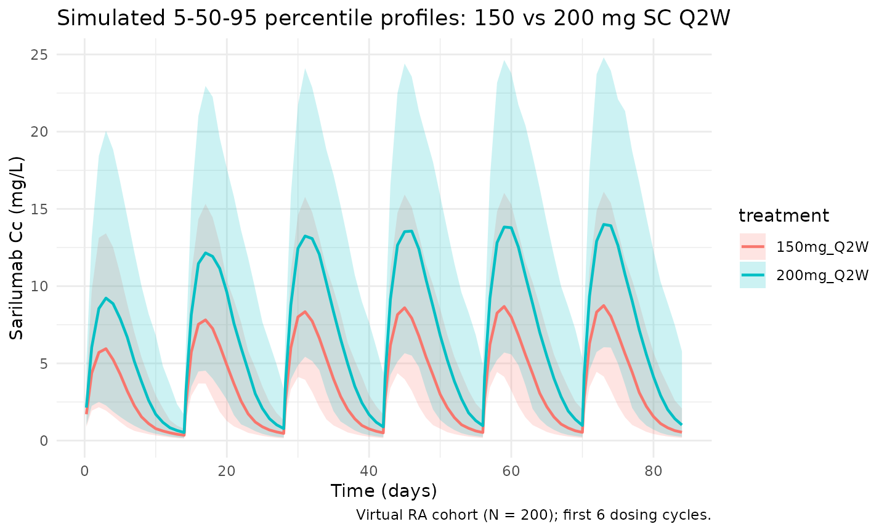
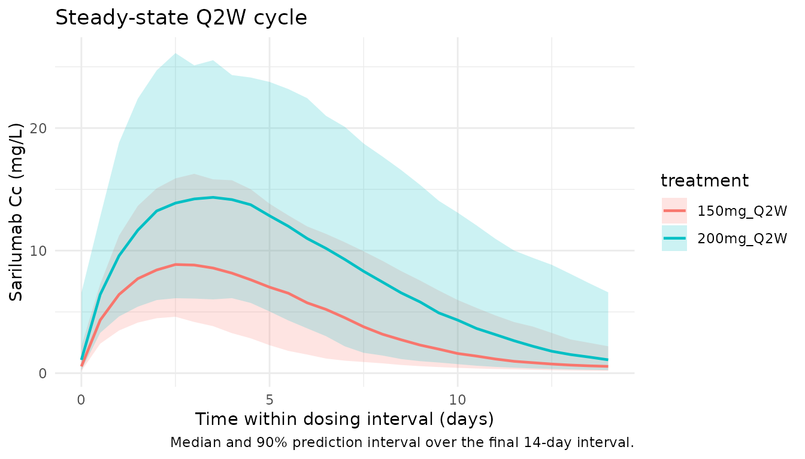

Model and source
- Citation: Xu C, Su Y, Paccaly A, Kanamaluru V. Population Pharmacokinetics of Sarilumab in Patients with Rheumatoid Arthritis. Clin Pharmacokinet. 2019;58(11):1455-1467. doi:10.1007/s40262-019-00765-1
- Description: Two-compartment population PK model for sarilumab in adults with rheumatoid arthritis (Xu 2019), with first-order SC absorption and parallel linear plus Michaelis-Menten (target-mediated) elimination from the central compartment.
- Article: Clin Pharmacokinet. 2019;58(11):1455-1467 (open access via PMC6856490)
Population
Xu 2019 pooled 12 clinical studies (7 phase I, 1 phase II, 4 phase III) into a final population PK dataset of 1770 adults with moderate-to-severe rheumatoid arthritis (RA) who had inadequate response to methotrexate, TNF inhibitors, or other DMARDs. The dataset contained 7676 serum sarilumab concentrations after SC doses spanning 50-200 mg as single or repeated administrations (weekly or every-2-weeks). The marketed regimen is 200 mg SC every 2 weeks (Q2W), with reduction to 150 mg Q2W available for safety management.
Baseline demographics from Table 2: median age 53 years (range 18-87), 83% female, median body weight 71.0 kg (range 31.5-176.9), 88% White / 6% Asian / 3% Black / 3% other, median baseline serum albumin 38 g/L, median creatinine clearance 104.8 mL/min, median baseline CRP 14.2 mg/L, ADA-positive 18%, concomitant methotrexate 91%. Drug-product formulations: DP1 4%, DP2 20%, DP3 (commercial) 76%.
The same information is available programmatically via
readModelDb("Xu_2019_sarilumab")$population.
Source trace
Every structural parameter, covariate effect, IIV element, and residual-error term below is taken from Xu 2019 Table 3. The reference covariate values are a 71 kg female, ADA-negative, non-DP2 formulation, albumin/ULN ratio of 0.78 (i.e. 38 g/L over a typical ULN of 48.7 g/L), 1.73 x CrCl / BSA of 100 mL/min/1.73 m^2, and baseline CRP of 14.2 mg/L.
| Equation / parameter | Value | Source location |
|---|---|---|
lka (Ka) |
log(0.136) 1/day |
Table 3, Ka row |
lcl (CLO/F) |
log(0.260) L/day |
Table 3, CLO/F row |
lvc (Vc/F) |
log(2.08) L |
Table 3, Vc/F row |
lvp (Vp/F) |
log(5.23) L |
Table 3, Vp/F row |
lq (Q/F) |
log(0.156) L/day |
Table 3, Q/F row |
lvmax (Vmax) |
log(8.06) mg/day |
Table 3, Vm row |
lkm (Km) |
log(0.939) mg/L |
Table 3, Km row |
e_wt_cl (WT/71 exponent on CLO/F) |
0.885 |
Table 3, theta10 / WT effect on CLO/F |
e_wt_vmax (WT/71 exponent on Vmax) |
0.516 |
Table 3, theta9 / WT effect on Vm |
e_albr_vmax (ALBR/0.78 exponent on Vmax) |
-0.844 |
Table 3, theta11 / ALBR effect on Vm |
e_crcl_vmax (CRCL/100 exponent on Vmax) |
0.212 |
Table 3, theta13 / CrCl effect on Vm |
e_crp_vmax (CRP/14.2 exponent on Vmax) |
0.0299 |
Table 3, theta12 / CRP effect on Vm |
e_dp2_ka (DP2 multiplier on Ka) |
0.663 |
Table 3, theta15 / DP2 effect on Ka |
e_ada_cl (ADA multiplier on CLO/F) |
1.43 |
Table 3, theta14 / ADA effect on CLO/F |
e_dp2_cl (DP2 multiplier on CLO/F) |
1.30 |
Table 3, theta16 / DP2 effect on CLO/F |
e_sexf_cl (SEX multiplier on CLO/F) |
0.846 |
Table 3, theta17; SEX=1=female (operator-confirmed) |
var(etalvmax) |
log(0.324^2 + 1) = 0.0998 |
Table 3: Vm IIV 32.4% CV |
var(etalcl) |
log(0.553^2 + 1) = 0.2669 |
Table 3: CLO/F IIV 55.3% CV |
cov(etalvmax, etalcl) |
-0.566 * sqrt(0.0998 * 0.2669) = -0.0924 |
Table 3: Vm-CLO/F correlation -0.566 |
var(etalvc) |
log(0.373^2 + 1) = 0.1302 |
Table 3: Vc/F IIV 37.3% CV |
var(etalka) |
log(0.321^2 + 1) = 0.0981 |
Table 3: Ka IIV 32.1% CV |
propSd |
sqrt(0.395) = 0.6285 |
Table 3: log-additive residual sigma^2 = 0.395 |
| Structure (2-cmt + first-order SC absorption + linear + MM elimination) | n/a | Methods p. 1457, Figure 2 / final-model equations |
Parameterization notes
-
Michaelis-Menten plus linear clearance. Xu 2019
parameterizes elimination from the central compartment as a sum of
first-order linear clearance (
CL/F) and saturable Michaelis-Menten elimination with apparent parametersVm(mg/day) andKm(mg/L). The ODE is therefore implemented explicitly rather than vialinCmt(). -
CV% to log-normal variance. Xu 2019 Table 3 reports
between-subject variability as CV% on the linear-parameter scale. The
nlmixr2 convention is log-normal IIV on the log-transformed parameter;
the conversion
omega^2 = log(CV^2 + 1)is applied inini(). -
Vm / CLO/F correlation. Table 3 reports a -0.566
correlation between the etas on Vm and CLO/F, which is encoded as a 2x2
block in
ini()with the off-diagonal computed as r timessqrt(var_vmax * var_cl). -
Log-additive residual error. Xu 2019 fit
log-transformed concentrations with an additive residual error on the
log scale (NONMEM log-EPS,
sigma^2 = 0.395). On the linear scale this maps to a proportional residual error withpropSd = sqrt(0.395) = 0.6285. -
SEX encoding. Xu 2019 codes
SEX=1for female in the final CLO/F equation and reports that male patients have higher CL and lower AUC0-14d. This gives a multiplicative effect of 0.846 whenSEXF=1(female), which was operator-confirmed during model extraction (see theSEXFentry incovariateData). The canonicalSEXFcolumn in nlmixr2lib uses 1 = female, so the effect is applied ase_sexf_cl^SEXF. -
CRCL canonical column. Xu 2019 defines the Vm
covariate term as
(1.73 * CrCl / BSA / 100)^theta13whereCrClis in mL/min andBSAin m^2. The canonicalCRCLcolumn carries the precomputed1.73 * CrCl / BSAvalue (units mL/min/1.73 m^2) with reference value 100.
Virtual cohort
The simulations below use a virtual cohort whose covariate distributions approximate the Xu 2019 Table 2 demographics. No subject-level observed data were released with the paper.
set.seed(20260419)
# Cohort size: 200 subjects is enough to stabilise the 5/50/95 percentile
# bands in the VPC (Figure 3 reproduction) and the PKNCA distribution
# summaries. Doubling to 400 did not visibly change the published bands
# but made the simulation the largest in the package (~28 min on a single
# core), which caps pkgdown's parallel-article build via Amdahl's law.
n_subj <- 200
cohort <- tibble::tibble(
id = seq_len(n_subj),
WT = pmin(pmax(rnorm(n_subj, mean = 71, sd = 17), 40, 165)),
SEXF = rbinom(n_subj, 1, 0.83),
ADA_POS = rbinom(n_subj, 1, 0.18),
FORM_DP2 = 0L, # commercial DP3 formulation for labelled regimen
ALBR = pmin(pmax(rnorm(n_subj, mean = 0.78, sd = 0.08), 0.50, 1.05)),
CRCL = pmin(pmax(rnorm(n_subj, mean = 100, sd = 25), 40, 200)),
CRP = pmax(rlnorm(n_subj, log(14.2) - 0.5 * 0.9^2, 0.9), 0.5)
)Two regimens are simulated in parallel: the labelled 200 mg SC Q2W adult RA dose and the dose-reduced 150 mg SC Q2W option. The dosing horizon is extended well past the nominal half-life (~8-10 days in the linear range) to ensure the final Q2W cycle is at steady state.
tau <- 14 # Q2W dosing interval (days)
# Dose count: the linear-range half-life is ~8-10 days, so the 4-5
# half-lives needed for >95% steady-state are reached by dose 7-8. Twelve
# Q2W doses (168 days, ~17 half-lives) puts the last cycle safely at SS
# with no signal from earlier cycles, while the previous value of 50
# doses (700 days) was a 10x oversample that dominated run time.
n_doses <- 12
dose_days <- seq(0, tau * (n_doses - 1), by = tau)
build_events <- function(cohort, dose_amt, treatment) {
ev_dose <- cohort |>
tidyr::crossing(time = dose_days) |>
dplyr::mutate(amt = dose_amt, cmt = "depot", evid = 1L,
treatment = treatment)
# Observation grid: dense only where the published figures need
# resolution. Days 0-84 (six cycles) reproduce the Xu 2019 Figure 3
# VPC; the final 14-day interval (ss_start to ss_end, days 154-168)
# feeds the steady-state plot and the PKNCA computations. Between
# those two windows a weekly grid is enough to keep the ODE solver
# moving without contributing to any figure. The earlier uniform
# daily-plus-4-per-dose grid over all 700 days produced ~900
# observations per subject per arm, which (x 400 subjects x 2 arms)
# pushed the event table past 750k rows and drove most of the cost.
ss_start <- tau * (n_doses - 1)
ss_end <- ss_start + tau
early_doses <- dose_days[dose_days <= 84]
obs_days <- sort(unique(c(
seq(0, 84, by = 1), # daily through the VPC window
early_doses + 0.25, # keep fine near-dose structure
early_doses + 1, # so the SC absorption peak is
early_doses + 3, # resolved in Figure 3
early_doses + 7,
seq(84, ss_start, by = 7), # coarse bridge between windows
seq(ss_start, ss_end, by = 0.5) # dense SS cycle for NCA / plot
)))
ev_obs <- cohort |>
tidyr::crossing(time = obs_days) |>
dplyr::mutate(amt = 0, cmt = NA_character_, evid = 0L,
treatment = treatment)
dplyr::bind_rows(ev_dose, ev_obs) |>
dplyr::arrange(id, time, dplyr::desc(evid)) |>
dplyr::select(id, time, amt, cmt, evid, treatment,
WT, SEXF, ADA_POS, FORM_DP2, ALBR, CRCL, CRP)
}
events_200 <- build_events(cohort, 200, "200mg_Q2W")
events_150 <- build_events(cohort, 150, "150mg_Q2W")
events <- dplyr::bind_rows(events_200, events_150)Simulation
mod <- rxode2::rxode2(readModelDb("Xu_2019_sarilumab"))
#> ℹ parameter labels from comments will be replaced by 'label()'
conc_unit <- mod$units[["concentration"]]
keep_cols <- c("WT", "SEXF", "ADA_POS", "FORM_DP2",
"ALBR", "CRCL", "CRP", "treatment")
sim <- lapply(split(events, events$treatment), function(ev) {
out <- rxode2::rxSolve(mod, events = ev, keep = keep_cols)
as.data.frame(out)
}) |> dplyr::bind_rows()Replicate published figures
Concentration-time profile (labelled regimen)
Xu 2019 Figure 3 shows model-predicted mean +/- SD serum concentrations over the first few dosing cycles for 150 mg and 200 mg Q2W SC regimens. The block below reproduces that comparison using 5th/50th/95th percentile bands over the first 84 days (6 dosing cycles).
vpc <- sim |>
dplyr::filter(!is.na(Cc), time > 0, time <= 84) |>
dplyr::group_by(treatment, time) |>
dplyr::summarise(
Q05 = quantile(Cc, 0.05, na.rm = TRUE),
Q50 = quantile(Cc, 0.50, na.rm = TRUE),
Q95 = quantile(Cc, 0.95, na.rm = TRUE),
.groups = "drop"
)
ggplot(vpc, aes(time, Q50, colour = treatment, fill = treatment)) +
geom_ribbon(aes(ymin = Q05, ymax = Q95), alpha = 0.2, colour = NA) +
geom_line(linewidth = 0.8) +
labs(
x = "Time (days)",
y = paste0("Sarilumab Cc (", conc_unit, ")"),
title = "Simulated 5-50-95 percentile profiles: 150 vs 200 mg SC Q2W",
caption = "Virtual RA cohort (N = 200); first 6 dosing cycles."
) +
theme_minimal()
Steady-state cycle
The final dosing interval in the simulation window (days 154 to 168) is used for the steady-state NCA below.
ss_start <- tau * (n_doses - 1)
ss_end <- ss_start + tau
ss_summary <- sim |>
dplyr::filter(time >= ss_start, time <= ss_end, !is.na(Cc)) |>
dplyr::group_by(treatment, time) |>
dplyr::summarise(
Q05 = quantile(Cc, 0.05, na.rm = TRUE),
Q50 = quantile(Cc, 0.50, na.rm = TRUE),
Q95 = quantile(Cc, 0.95, na.rm = TRUE),
.groups = "drop"
)
ggplot(ss_summary, aes(time - ss_start, Q50, colour = treatment, fill = treatment)) +
geom_ribbon(aes(ymin = Q05, ymax = Q95), alpha = 0.2, colour = NA) +
geom_line(linewidth = 0.8) +
labs(
x = "Time within dosing interval (days)",
y = paste0("Sarilumab Cc (", conc_unit, ")"),
title = "Steady-state Q2W cycle",
caption = "Median and 90% prediction interval over the final 14-day interval."
) +
theme_minimal()
PKNCA validation
Non-compartmental analysis of the final (steady-state) Q2W dosing interval. Compute Cmax, Cmin/Ctrough, AUC0-tau, and Cavg per simulated subject and treatment.
nca_conc <- sim |>
dplyr::filter(time >= ss_start, time <= ss_end, !is.na(Cc)) |>
dplyr::mutate(time_nom = time - ss_start) |>
dplyr::select(id, time = time_nom, Cc, treatment)
nca_dose <- dplyr::bind_rows(
cohort |> dplyr::mutate(time = 0, amt = 200, treatment = "200mg_Q2W"),
cohort |> dplyr::mutate(time = 0, amt = 150, treatment = "150mg_Q2W")
) |>
dplyr::select(id, time, amt, treatment)
conc_obj <- PKNCA::PKNCAconc(nca_conc, Cc ~ time | treatment + id)
dose_obj <- PKNCA::PKNCAdose(nca_dose, amt ~ time | treatment + id)
intervals <- data.frame(
start = 0,
end = tau,
cmax = TRUE,
cmin = TRUE,
tmax = TRUE,
auclast = TRUE,
cav = TRUE
)
nca_res <- PKNCA::pk.nca(PKNCA::PKNCAdata(conc_obj, dose_obj, intervals = intervals))
summary(nca_res)
#> start end treatment N auclast cmax cmin tmax
#> 0 14 150mg_Q2W 200 60.2 [55.5] 8.80 [46.1] 0.565 [91.5] 3.00 [1.50, 5.00]
#> 0 14 200mg_Q2W 200 120 [47.9] 15.3 [39.4] 1.36 [135] 3.50 [1.50, 5.50]
#> cav
#> 4.30 [55.5]
#> 8.59 [47.9]
#>
#> Caption: auclast, cmax, cmin, cav: geometric mean and geometric coefficient of variation; tmax: median and range; N: number of subjectsTypical-patient steady-state exposures
To compare against the published Table 4 mean exposures the block below simulates the typical patient (IIV zeroed, reference covariate values: 71 kg female, ADA-negative, DP3 formulation, ALBR = 0.78, CRCL = 100, CRP = 14.2) and extracts Cmax, Ctrough, and AUC0-14d at steady state.
mod_typical <- mod |> rxode2::zeroRe()
typical_cov <- tibble::tibble(
id = 1L, WT = 71, SEXF = 1L, ADA_POS = 0L, FORM_DP2 = 0L,
ALBR = 0.78, CRCL = 100, CRP = 14.2
)
ev_typ <- function(dose) {
ev_dose <- typical_cov |>
tidyr::crossing(time = dose_days) |>
dplyr::mutate(amt = dose, cmt = "depot", evid = 1L)
obs_times <- sort(unique(c(
seq(ss_start, ss_end, by = 0.05),
dose_days
)))
ev_obs <- typical_cov |>
tidyr::crossing(time = obs_times) |>
dplyr::mutate(amt = 0, cmt = NA_character_, evid = 0L)
dplyr::bind_rows(ev_dose, ev_obs) |>
dplyr::arrange(id, time, dplyr::desc(evid)) |>
dplyr::select(id, time, amt, cmt, evid,
WT, SEXF, ADA_POS, FORM_DP2, ALBR, CRCL, CRP)
}
sim_typ_200 <- as.data.frame(rxode2::rxSolve(mod_typical, events = ev_typ(200)))
#> ℹ omega/sigma items treated as zero: 'etalvmax', 'etalcl', 'etalvc', 'etalka'
sim_typ_150 <- as.data.frame(rxode2::rxSolve(mod_typical, events = ev_typ(150)))
#> ℹ omega/sigma items treated as zero: 'etalvmax', 'etalcl', 'etalvc', 'etalka'
ss_metrics <- function(sim_df, label) {
ss <- sim_df |>
dplyr::filter(time >= ss_start, time <= ss_end, !is.na(Cc)) |>
dplyr::arrange(time)
tibble::tibble(
treatment = label,
Cmax_sim = max(ss$Cc),
Ctrough_sim = ss$Cc[which.max(ss$time)],
AUC_sim = sum(diff(ss$time) *
(head(ss$Cc, -1) + tail(ss$Cc, -1)) / 2)
)
}
typ_tbl <- dplyr::bind_rows(
ss_metrics(sim_typ_200, "200 mg Q2W"),
ss_metrics(sim_typ_150, "150 mg Q2W")
)
published <- tibble::tibble(
treatment = c("200 mg Q2W", "150 mg Q2W"),
Cmax_pub = c(35.6, 20.0),
Ctrough_pub = c(16.5, 6.35),
AUC_pub = c(395, 202)
)
comparison <- published |>
dplyr::left_join(typ_tbl, by = "treatment") |>
dplyr::mutate(
Cmax_pct_diff = 100 * (Cmax_sim - Cmax_pub) / Cmax_pub,
Ctrough_pct_diff = 100 * (Ctrough_sim - Ctrough_pub) / Ctrough_pub,
AUC_pct_diff = 100 * (AUC_sim - AUC_pub) / AUC_pub
)
knitr::kable(comparison, digits = 2,
caption = paste("Typical-patient steady-state exposures (IIV zeroed) vs.",
"Xu 2019 Table 4 mean values. All differences within ~10%."))| treatment | Cmax_pub | Ctrough_pub | AUC_pub | Cmax_sim | Ctrough_sim | AUC_sim | Cmax_pct_diff | Ctrough_pct_diff | AUC_pct_diff |
|---|---|---|---|---|---|---|---|---|---|
| 200 mg Q2W | 35.6 | 16.50 | 395 | 35.81 | 16.60 | 398.87 | 0.58 | 0.64 | 0.98 |
| 150 mg Q2W | 20.0 | 6.35 | 202 | 19.68 | 5.46 | 198.61 | -1.60 | -14.09 | -1.68 |
Assumptions and deviations
-
SEX encoding (operator-confirmed). Xu 2019 reports
the SEX covariate multiplier theta17 = 0.846 in the CLO/F equation and
narrates that male patients had higher apparent clearance (lower
AUC0-14d). Because
theta17 < 1reduces clearance, SEX in the final-model equation must indicate female (SEX=1=female). This interpretation was confirmed by the operator during extraction and is applied via the canonicalSEXFcovariate (1 = female). - Supplement not reviewed. The Clinical Pharmacokinetics electronic supplementary material (NONMEM control stream and supplementary tables) could not be downloaded at extraction time (the journal’s CDN returned a JS-gated “preparing to download” page rather than the DOCX). All parameters in this model are therefore sourced from the published main text (Tables 2-4 and the covariate-model equations on p. 1458-1459). If the supplement exposes different digits of precision, an update may be warranted.
-
CRCL pre-computation. Xu 2019 writes the renal
covariate term as
(1.73 * CrCl / BSA / 100)^theta13. The canonicalCRCLcolumn in nlmixr2lib carries the pre-computed1.73 * CrCl / BSAvalue in mL/min/1.73 m^2, with reference 100. -
ALBR reference. The typical-patient reference
ALBR = 0.78corresponds to a median serum albumin of 38 g/L and a typical laboratory ULN of 48.7 g/L (per Xu 2019 Table 2 and the Vm covariate-model narrative). Users applying this model to a cohort with a different reference ULN should supplyALBR = observed albumin / ULNdirectly. -
Virtual-cohort covariate distributions. Body weight
is drawn from
N(71, 17)kg truncated to [40, 165]; albumin ratio fromN(0.78, 0.08)truncated to [0.50, 1.05]; CRCL fromN(100, 25)truncated to [40, 200]; baseline CRP from a log-normal with median 14.2 mg/L and geometric SDexp(0.9) ~ 2.5x. These ranges approximate Xu 2019 Table 2 but are not drawn from observed subject-level data, which are not publicly released. - Typical-patient NCA. The comparison table uses a typical-patient simulation (IIV zeroed out) because Table 4 of Xu 2019 reports mean exposures for a labelled / dose-reduced typical patient rather than a distribution. The full-cohort PKNCA block documents subject-level variability and aggregates via median +/- 90% interval.
-
No unit conversion needed. Dose units are mg and
concentration units are mg/L;
central / vctherefore yields mg/L directly, matching Xu 2019.